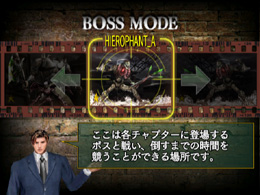
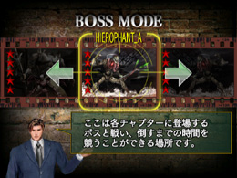

HOD2 ボスモード
モード紹介
みなさん、「Ｇ」のボス攻略のコラムは、もう読みましたか？
「攻略方法は分かったから、試しに練習してみたい！」
そんなときに、ぴったりなのが、この“ボスモード”。
このモードでは、HOD2のボス戦だけをプレイし、そのタイムを競います。
アーケードモードで、なかなか先に進めないアナタ！
まず、ボスモードでしっかり練習してから、アーケードモードに望んでみては
いかがでしょう？
ボスが楽にクリアできるようになれば、エンディングも間近…のはず！

ここでしっかり攻略の練習をしよう！
各ボスの攻略方法は、「Ｇ」の解説に任せるとして、ここではボスモードを
120%活用するためのポイントをお伝えします。
【1】 同じボスでも、2つのパターン？
HOD2のボスの中には、攻撃パターンや戦う場所が2つ用意されている
ものがあります。選択画面で、名前の後ろに「A」または「Ｂ」とついている
ボスがソレです。
どちらと戦うかは、『ステージ中に通ったルート』によって決定されるので、
アーケードモードのクリアを目指すならば、まずは自分の好きなルートを
決めることと、そのルートで出現するボスを、ここで練習することが近道と
なります。
【2】クリアするごとに難易度アップ
クリアしたボスは、選択画面に「星のマーク」が増えていき、数が増える
ほど難しくなり、その難易度は5段階あります。

星5つまでクリアすると、星の色が黄色から赤に！
しかし、
「練習のために、同じレベルを何度もプレイしたい…」
そんな時は、十字ボタンの上または下で、難易度を調整することができる
ので、自分の難易度で腕を磨いてみてください。（星が2つ以上の時のみ）
【3】 どうしても倒せない時は…
「難易度がアップすると、途中でゲームオーバーになってしまう」
そんなアナタは、オプションの「GAME SETTINGS」でライフの数を確認して
みましょう。
ボスモードではクレジットは1つですが、ライフの数はオプションで設定した
数が反映されます。なかなかボスが倒せないというアナタは、ライフの数が
最大になっているか、もう1度確認してみてください。
さあ、ボスモードについて分かってもらえたでしょうか？
全てのボスを星5つまでそろえることができたら、アナタの腕前は相当なもの。
アーケードモードをクリアするための練習として、ぜひボスモードを活用して
みてください！
ではまた。
 RSS
RSS